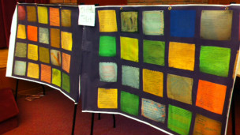

|
|

زنان ایرانی و حق شرکت در نشست مقام زن سازمان ملل
جمعه12 اسفند 1390
بی بی سی: نشست سالانه "مقام زن" سازمان ملل امسال بدون شرکت فعالان اجتماعی ایرانی بر گزار می شود.
این نشست هم اکنون در مقر سازمان ملل در نیویورک در جریان است و تا روز جهانی زن در ۸ مارس ادامه خواهد یافت.
به گفته فعالان حقوق زن، بازداشت و مشکلات قضایی ایجاد شده برای زنان ایرانی شرکت کننده در نشست سال گذشته علت این غیبت است.
مریم بهرمن و فرانک فرید سال گذشته به خاطر شرکت در این اجلاس بین المللی و پس از بازگشت به ایران بازداشت و هر کدام چندین ماه را در زندان گذراندند.
امسال تعدادی از فعالان زن ایرانی از درون ایران در نامه ای به ائتلافی از سازمان های بین المللی زنان و حقوق بشر و نهاد زنان سازمان ملل خواستار اتحاد آنها برای به رسمیت شناخته شدن حق زنان ایرانی برای شرکت آزادانه بدون هیچ گونه عواقب در این نشست سالانه شده اند. آنها پیشنهاد کرده اند ماده واحده ای به این مضمون در قطعنامه نهایی نشست گنجانده شود.
این قطعنامه باید به تصویب همه نهادهای مدنی شرکت کننده و نمایندگان دولت ها برسد.
در جلسه ۱۰ اسفند که در نزدیکی مقر سازمان ملل در نیویورک برگزار شد نامه جمعی این فعالان زن از ایران خطاب به کمیسیون بررسی و همچنین فیلمی تحت عنوان "صداهای غایب" پخش شد که در ان شیرین عبادی و سایر زنانی که در نشست های قبلی این کمیسیون شرکت کرده بودند، از تجربیات خود و اثرات مشارکت در این کمیسیون سخن گفتند و خواستار رفع موانع برای حضور زنان ایرانی در این اجلاس سالانه شدند.
سخنرانان این مراسم که چندین سازمان فعال در حقوق زنان و حقوق بشر از جمله نهاد زنان سازمان ملل و عفو بین الملل را نمایندگی می کردند هم رفتار حکومت ایران با زنان ایرانی به خاطر شرکت در یک اجلاس بین المللی سازمان ملل را حیرت آور خوانده و خواستار توقف آن شدند.
فعالان زن ایرانی که از شرکت در اجلاس امسال صرف نظر کردند در نامهشان نوشتهاند: "ما جمعی از فعالان برابری خواه زنان در ایران که مایل بودیم در پنجاه و ششمین نشست سی اس دبیلیو سازمان ملل (کمیسیون مقام زن) شرکت کنیم، به خاطر تهدیدهایی که زنان ایرانی شرکت کننده در این نشست در سال های گذشته با آن روبرو بوده ند، تصمیم گرفتیم که با شما از راه دور سخن بگوییم به این امید که شما به نمایندگی از زنان ایران بتوانید از حق ما در رفع هر گونه تبعیض جنسیتی و خشونت علیه زنان دفاع کرده و نمایندگان دولت ایران را که عضو کمیسیون مقام زن هستند وادار کنید که به تعهدات بین المللی خود برای برابری جنسیتی عمل کند."
در این نامه آمده است: "امیدواریم که با فشارهای شما فعالان جنبش جهانی زنان و پیگیری نهاد زنان سازمان ملل متحد، امکان تامین امنیت شرکت زنان ایرانی در نشست های بعدی فراهم شود و ما در کنار شما و دوش به دوش یکدیگر برای دستیابی به برابری جنسیتی گام برداریم "
آنها برای جلب نظر نهادهای بین المللی و نمایندگان کشورها برای گنجاندن بندی که کشورهای شرکت کننده از جمله دولت ایران را ملزم به تامین امنیت شرکت کنندگان پس از بازگشت به کشورشان می کند، کارزاری را در شبکه های اجتماعی آغاز کرده اند.
زهره اکبرى یکی از فعالان این جمع که ویدیوی صداهاى غایب را در این نشست نشان داد به بی بی سی فارسی گفت آنها امیدوارند از طریق این کمپین، نامه نگاری، تهیه ویدیو و ایجاد صفحه ویژه فیس بوک "زنان ایران و کمیسیون مقام زن" توجه شرکت کنندگان در این اجلاس بین المللی را به برخورد قضایی و امنیتی دولت ایران با زنان ایرانی شرکت کنندگان در اجلاس سال گذشته جلب کنند.

آنها همچنین در اعتراض به قوانین تبعیض علیه زنان ایران تصویر نامه های چهل زن ایرانی را که شوهرانشان زن دوم اختیار کرده اند روی پارچه ای که آن را "چهل تکه" نامیدند به نمایش گذاشتند. آنها در نامه خود به اجلاس در مورد این تبعیض ها نوشتند:
"دولتمردان ایران با فرستادن لایحه های جدید به مجلس، سعی در به عقب راندن جایگاه حقوقی زنان ایرانی دارند. هم اکنون هر روز شاهد فشارهای بیشتری بر زنان ایران هستیم و سیاست ها و برنامه های کنونیِ بخش بزرگی از سیاستگذاران و تصمیم سازان جمهوری اسلامی اعم از مجلس، دولت و رهبری به طور جدی در جهت راندن زنان از جامعه به خانه عمل می کنند؛ برنامه هایی که بیم آن می رود پس از انتخابات مجلس نهم به طور جدی تر عملی و اجرایی گردند، ازجمله آنکه لایحه حمایت از خانواده در محور کار قرار گیرد؛ قوانین کار به زیان زنان تغییر یابد؛ زنان بیش از گذشته از برخی عرصه های آموزشی و در کل مشارکت اجتماعی و سیاسی دور نگه داشته شوند؛ و از همه مهم تر فشار بر فعالان زنان که سعی در بهبود وضعیت زنان دارند افزایش یابد."
این تلاش ها با استقبال گسترده نشست ده اسفند قرار گرفت. آنها در پایان این اجلاس با به دست گرفتن پلاکاردهایی که در آن از حق زنان ایرانی برای شرکت در این اجلاس دفاع شده بود عکس دسته جمعی گرفتند.
انتظار می رود بیانیه پایانی نشست سالانه مقام زن سازمان ملل یک روز پس از روز جهانی زن در ۹ مارس منتشر شود.
تماس های بی بی سی فارسی با دفتر نمایندگی ایران در سازمان ملل درباره آزار و اذیت زنانی که در سال گذشته در این اجلاس شرکت کرده اند، بی نتیجه ماند.